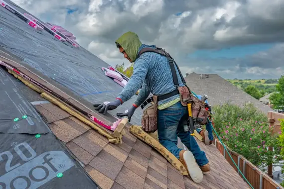
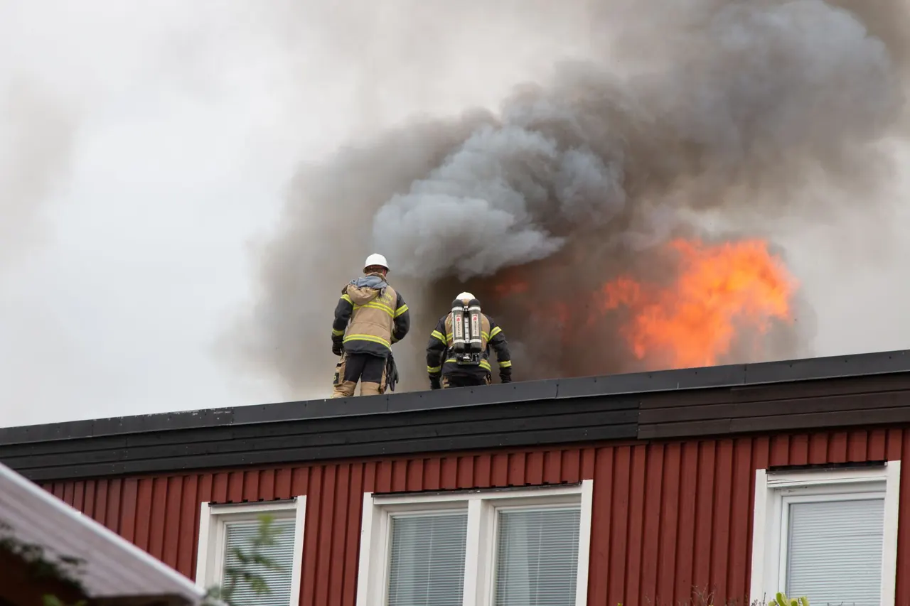
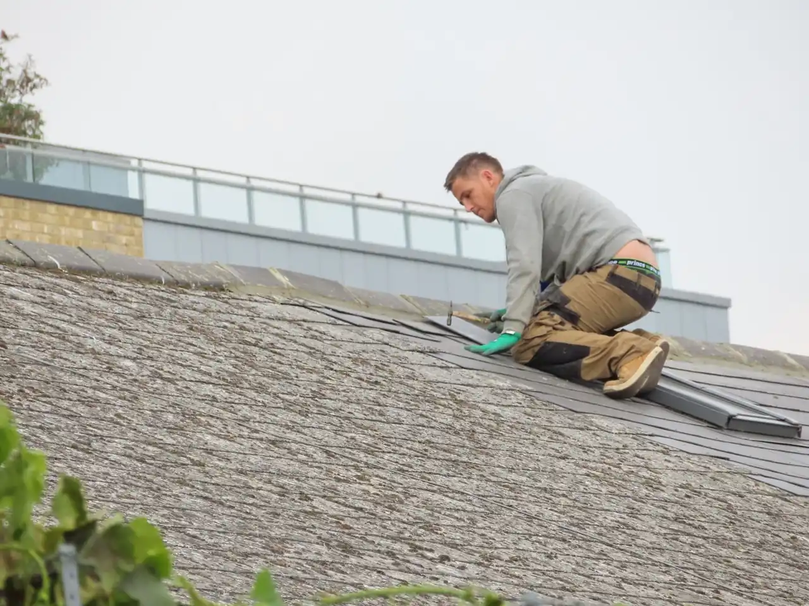
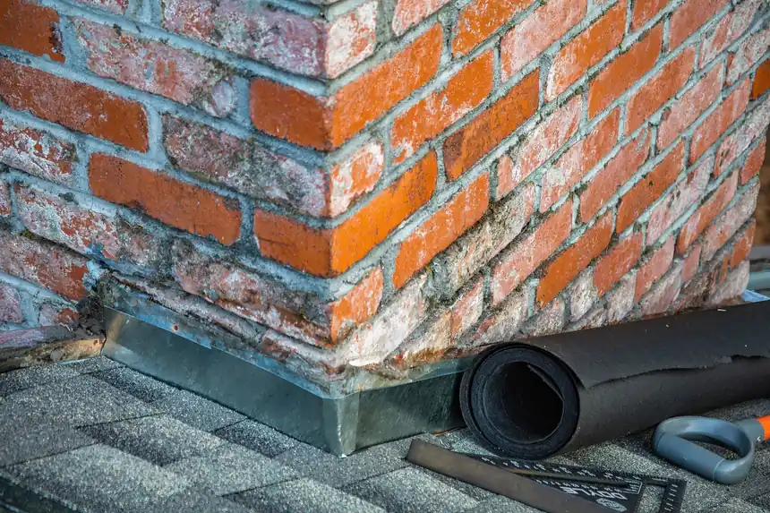
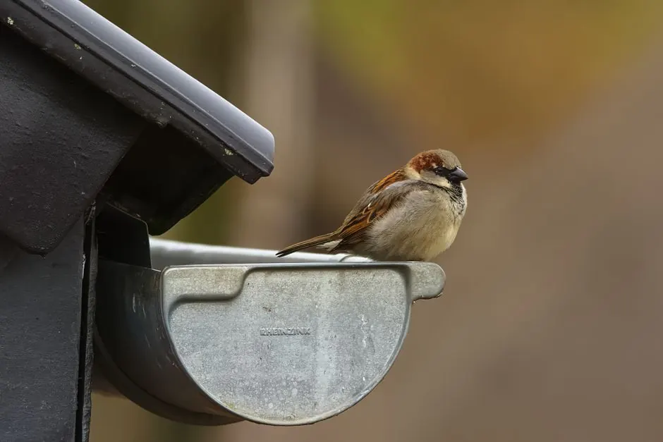

Emergency roof repairs: what to do first
Learn the crucial first steps to take during an emergency roof repair in Panama City to minimize damage and ensure safety.
Read the guide
Roofing Panama City FL is essential for maintaining the integrity of your home. As a leading roof contractor in Panama City, we provide quality services that ensure your roof stands the test of time.
Useful updates and clear arrival timing.
Review the approach and price before deciding.
Equipped vehicles and respectful cleanup.
Neighbors serving neighbors with follow-through.
We specialize in Roofing Panama City FL, delivering top-quality roofing solutions since 2010. Our services are designed to meet the unique needs of Panama City homeowners, ensuring durability and safety.
What sets us apart is our commitment to excellence and customer satisfaction. We are a certified roof contractor in Panama City, offering quick response times and expertise in neighborhoods like St. Andrews and Downtown Panama City.


We offer a comprehensive range of roofing services tailored to the needs of Panama City residents, ensuring quality and reliability.

Our roof installation service provides durable roofing solutions for new constructions in Panama City. We use high-quality materials like GAF asphalt shingles.
View service
When your roof is beyond repair, our roof replacement service ensures a seamless transition with minimal disruption, using top brands like Owens Corning.
View serviceOur roof repair services tackle issues like leaks and missing shingles quickly, ensuring your home remains safe and dry in Panama City.
View serviceShare what is happening and receive a clear next step from the local team.
Our commitment to quality and customer satisfaction sets us apart from other roof contractors in Panama City.
We are a NRCA Certified roofing contractor, ensuring compliance with Florida Building Code. Our team is fully insured for your peace of mind.
We understand the urgency of roofing issues. Our team provides same-day estimates and quick turnaround for repairs in Panama City.
We offer affordable roof contractor services in Panama City, ensuring quality without breaking the bank. Contact us for a free estimate.
Our pricing for roofing services in Panama City is transparent, with no hidden fees. We provide written estimates to ensure clarity.
We start with a thorough consultation to understand your roofing needs, discussing options and budgets with the homeowner.
Our experts conduct a comprehensive roof inspection to identify any existing issues or potential problems.
We present a detailed proposal outlining the scope of work, materials, and costs, ensuring transparency before any work begins.
Our skilled team executes the roofing project using high-quality materials, adhering to best practices and safety standards.
Our roofing process is designed for efficiency and quality, ensuring your needs are met every step of the way.

We address a variety of roofing issues faced by Panama City residents, providing effective solutions.
We provide prompt roof repairs to stop leaks, ensuring your home remains dry and protected.
Our team replaces damaged shingles quickly, restoring your roof's integrity and preventing further issues.
We install roof ventilation systems to improve airflow, reducing heat and moisture accumulation in your attic.
We proudly serve Panama City, Florida, and its surrounding neighborhoods, providing top-notch roofing services tailored to local needs.
Routes are built around practical drive times and prepared arrivals. Call if your community is not listed.
Available in many surrounding communities and ZIP codes. Call to confirm current route coverage.
In Panama City, you can choose from asphalt shingles, metal roofing, tile roofing, and flat roofing options, each offering unique benefits.
Look for licensed and insured contractors with positive reviews and experience in your specific roofing needs. Our team meets all these criteria.
The average cost for roofing in Panama City FL ranges from $5,000 to $10,000, depending on materials and the size of the roof.
Typically, roof installation in Panama City takes 1 to 3 days, depending on the project size and weather conditions.
Regular inspections, cleaning gutters, and addressing minor repairs promptly are essential for maintaining roofs in Panama City.
Here are some common questions we receive about our roofing services in Panama City.
Ask the local teamPractical guidance to help you notice problems earlier and understand the available options.

Learn the crucial first steps to take during an emergency roof repair in Panama City to minimize damage and ensure safety.
Read the guide
Learn how to effectively maintain your gutters in Glenwood with these 5 essential tips to prevent costly damage.
Read the guide
We invite you to reach out for any roofing needs. Our team is available to assist you promptly, ensuring a quick response.